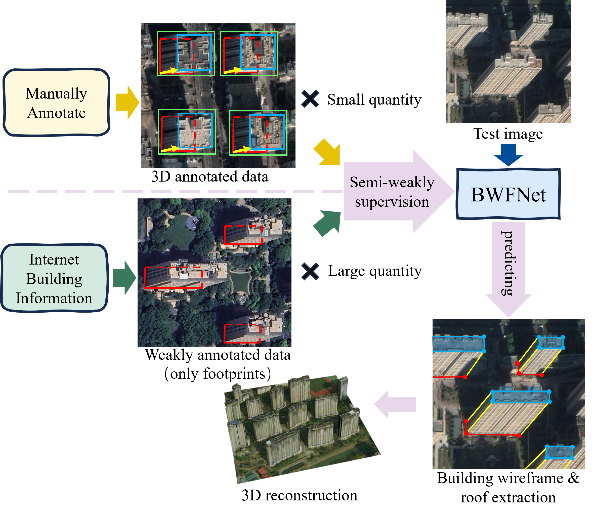

BSKNet: 3D Building Reconstruction from Single Off-Nadir Remote
Sensing Image with Semi-Weak Supervisions

3D building reconstruction using monocular remote sensing imagery has
emerged as a critical research frontier in geospatial AI, driven by its
superior cost-effectiveness in terms of both in data acquisition and
processing time. However, the reliance of existing deep learning
methodologies on a large number of manually annotated labels poses a
significant barrier to their practical application. Although recent
studies have contributed to reducing label dependency, a considerable
amount of annotation effort is still required to establish baseline
reconstruction credibility. To address this challenge, we propose a
BuildingSKeletonNetwork (BSKNet) for 3D building reconstruction under
semi-weak supervisions combining limited full 3D annotations with
abundant building-footprint-only labels. BSKNet innovatively designs and
employs a skeletal representation of buildings, which \textbf{implicitly
encapsulates knowledge from two dimensions: building structural
knowledge and corner local information}, while providing ample data for
3D reconstruction. We designed BSKNet to learn the capability of
building skeleton extraction from these two knowledge dimensions. Under
weak supervision, the knowledge acquired from these two dimensions is
synergistically enhanced via \textbf{mutual complementation and
cross-validation.} Additionally, we propose a self-supervised training
method based on consistency constraints to further
improve the effect of weakly supervised training. The experimental
results demonstrate that the proposed BSKNet achieves excellent
reconstruction performance by utilizing only 3\% fully annotated data
combined with weakly supervised samples. This performance represents a
significant improvement compared to current state-of-the-art methods.